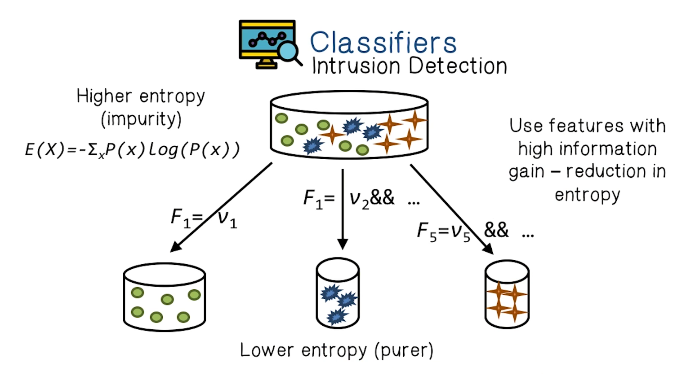

NetSec Lecture Notes - Lesson 17 - Machine Learning for Security
Machine Learning for Security
- Goal is to automatically identify new attacks
Data Analysis Quiz
- Model normal network and system behavior and identify deviations from the norm
- Anomaly detection
- Combination of misuse and anomaly detection
- Hybrid detection
- Detect known attacks using signatures of those attacks
- Misuse detection
- Can detect known types of attacks without generating a lot of false positives
- Misuse detection
- Have the ability to detect zero-day attacks
- Anomaly detection
Machine Learning Review
- Given training examples, determine a function that can predict the output. Then apply it to testing examples
- Done by minimizing prediction error on the training set
- Data is drawn randomly from a real-world process, and split randomly into test and training sets
- Very basic review of modeling process given here. Not transcribed here in detail.
Generalization
- How well do the features learned from the training set generalize to unseen test data?
Performance Measures
- Error rate
- Fraction of false predictions
- Accuracy
- Fraction of correct predictions
- Precision/recall
- Example: binary classification problems
- Precision is the fraction of correct predictions among all examples predicted to be positive
- Recall is the fraction of correct predictions among all real positive examples
- Can be generalized to multi-class cases
ML Types Quiz
- The main task is to find patterns, structures, or knowledge in the unlabeled data
- Unsupervised learning
- The task is to find a function or model that explains the data
- Supervised learning
- Some of the data is labeled during acquisition
- Semi-supervised learning
Classification Problems
- Brief, high-level coverage of classification and decision tree models. It’s a tree, with rules for branching.
- Not transcribed here in detail.
Building a Decision Tree
- First test all attributes and select the one that would function as the best root
- Break up the training set into subsets based on the branches of the root node
- Test the remaining attributes to see which ones fit best underneath the branches of the root node
- Continue this process for all other branches until
- all examples of a subset are one type (i.e. same class label)
- there are no more attributes left (default value should b e majority classification)
- Determing which attribute is best (Entropy and Information Gain)
- Entropy is the minimum number of bits needed to represent the examples according to their class labels, or roughly how “pure” the examples are. That is, if the examples are evenly distributed into different classes, the entropy is the maximum and if the examples are all in a single class the entropy is minimum
- The information gain is described as an equation, but meaans that a given Attribute A is better at separating samples S according to their classification. That is, S are partitioned into “purer” subsets
Decision Tree Quiz
- Can supplement honeypot analysis
- True
- Can supplement penetration testing
- True
- Cannot highlight malicious traffic
- False
- Cannot characterize known scanning activity
- False
- Can detect previously unknown network anomalies
- True
Clustering
- Construct a partition of training examples that optimizes the chosen partitioning criterion, e.g. a distance or similarity function
- Start with seed clusters of one element
- Assign samples to clusters based on distance measures
- Find new centroids
- Iterate above 3 steps until the clusters converge. That is, no more changes in the clusters
Define the ML Problem Quiz
C&C Protocol Detection
- Task - recognize and attribute C&C communication on networks
- Training - supervised learning
- Performance measures - percentage of network communication correctly classified
- What type of data will we need for C&C Protocol Detection
- We will need known C&C communication (labeled data)
Classifiers
- Intrusion detection is fundamentally a classification problem, in that we’re trying to distinguish between legitimate and malicious network traffic
- 
Audit Data Preprocessing
- Goes through example of decomposing PCAP data into features, and fitting simple model to it. Not transcribed here in detail.
Mining Patterns
- Associations of features
- e.g.
(service=http, flag=S0 - Basic algorithm: association rules
- e.g.
- Sequential patterns in activity records
- Adjusting and augmenting basic algorithms is often necessary
- Goes into some depth on considering features like “service”, and how that can be done mathematically
- It boils down to reduction in irrelevant patterns detected, to improve signal-to-noise ratio
- Compare and identify “intrusion-only” patterns
- Parse each intrusion pattern
- Identify the anatomy (reference and axis) and invariant information of an attack
- Apply count, percent, and average operations to add temporal and statistical features
Dataset Selection Quiz
List some considerations when selecting a dataset for training
- There is no perfect way of labelling data, therefore there really is no perfect IDS dataset
- Selecting a correct baseline dataset for your network
- Selecting a dataset that has a range of intrusion attacks
Feature Construction Example
- “syn flood” patterns (dst_host is reference attribute)
(flag=S0, service=http), (flag=S0, service=http) -> (flag=S0, service=http) [0.6, 2s]- Add features:
- count the connections to the same dst_host in the past 2 seconds, and among those connections:
- the percentage with the same service
- the percentage with S0
- count the connections to the same dst_host in the past 2 seconds, and among those connections:
1998 DARPA Evaluation
- The data (prepared by MIT Lincoln Lab)
- Total 38 attack types, in four categories:
- DOS, e.g. SYN flood
- Probing, e.g. port scan
- R2L (remote intruder illegally gaining access to local systems), e.g. guessing a password
- U2R (user illegally gaining root privilege), e.g. buffer overflow
- 40% of attack types are in test data only, i.e. “new” to intrusion detection systems
- Total 38 attack types, in four categories:
Features
- Intrinsic features (inherent to any connection)
- protocol (service)
- protocol type (TCP, UDP, ICMP, etc)
- duration of the connection
- flag (connection established and terminated properly, SYN error, rejected, etc)
- # of wrong fragments
- # of urgent packets
- whether the connection is from/to the same IP/port pair
- Content features (for TCP connections only)
- # of failed logins
- successfully logged in or not
- # of root shell prompts
su rootattempted or not- # of access to security control files
- # of compromised states (e.g. Jumping to address, path not found, etc)
- # of write access to files
- # of outbound commands
- # of hot (the sum of all the above hot indicators)
- is a guest login or not
- Features constructed from mined patterns
- Temporal and statistical “traffic” features that describe connetions within a time window
- # of connectiosn to the same destination host as the current connection in the past 2 seconds, and among these connections:
- # of rejected connections
- # of connections with SYN errors
- # of different services
- % of connections that have the same service
- % of unique services
- # of connectiosn that have the same service as the current connection, and among these connections
- # of rejected connections
- # of connections with SYN errors
- # of different destination hosts
- % of connections that have the same destination host
- % of unique destination hosts
- # of connectiosn to the same destination host as the current connection in the past 2 seconds, and among these connections:
- Temporal and statistical “traffic” features that describe connetions within a time window